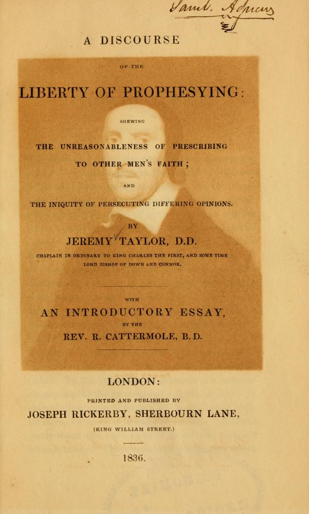
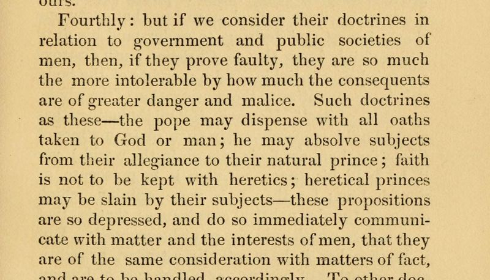

“The water and the Spirit in this place signify the same thing”
English: pp. 328–329, scan and scan (chapter “Case of the Anabaptists”).

… However, there is no danger that infants should perish for want of this external ministry, much less for prevaricating Christ’s precept of ‘Except a man be born again,’ &c. For, first, the water and the Spirit in this place signify the same thing; and by water is meant the effect of the Spirit, cleansing and purifying the soul, as appears in its parallel place of Christ baptizing with the Spirit and with fire. For although this was literally fulfilled in Pentecost, yet morally there is more in it, for it is the sign of the effect of the Holy Ghost, and his productions upon the soul … and you may as well conclude that infants must also pass through the fire as through the water. …
Collation with Lecky: Lecky’s “baptising” for Taylor’s “baptizing” and lower-case “spirit”; otherwise identical.
James and John, Elias and the Mosaic law (p. 368)
English: p. 368, scan (the end of the chapter on Judaic law and persecution; image = page + 41).
… For in the case of the apostles and the men of Samaria, when James and John would have called for fire to destroy them, even as Elias did under Moses’s law, Christ distinguished the spirit of Elias from his own spirit, and taught them a lesson of greater sweetness, and consigned this truth to all ages of the church, that such severity is not consistent with the meekness which Christ by his example and sermons hath made a precept evangelical; at most it was but a judicial law, and no more of argument to make it necessary to us than the Mosaical precepts of putting adulterers to death, and trying the accused persons by the waters of jealousy. …
Lecky (vol. II, ch. IV, note 7): “Taylor, in noticing this argument, finely says that Christ, by refusing to permit his apostles to call down fire like Elias on the misbeliever, clearly indicated his separation from the intolerance of Judaism. (Liberty of Prophesying, sec. 22.)” A fair paraphrase; “sec. 22” is the work’s section number, not read here; the page is in the section on the Old Testament as a ground for persecution.
Editor’s notes on this page
Lecky’s quotation is accurate (“The water and the spirit in this place signify the same thing; and by water is meant …”). Taylor’s sentence runs across the page break: “For, first, the water and the Spirit in this place signify the same thing; and by water is meant the effect of the Spirit, cleansing and purifying the soul, as appears in its parallel place of Christ baptizing with the Spirit and with fire.” Taylor’s purpose is a defence of the Anabaptists’ objection to infant baptism: he goes on to say that if the “exclusive negative” is read by analogy with Peter’s “not the washing of the flesh”, it cannot prove the necessity of infant baptism.
How far the Church of Rome is tolerable (Section XX, pp. 358–360)
English: 1836 printing, Section XX, “How far the Religion of the Church of Rome is tolerable”, p. 359, scan n400 (pp. 358 and 360 from the OCR). Lecky cites “Sec. 22”; in this edition Section XXII is on communicating with churches of other persuasions, so his section number does not fit. Highlighted: the exceptions Lecky lists.

[p. 358] … so if these men live well though they teach ill, they are to be imitated, not heard: their doctrines by all means, Christian and human, are to [p. 359] be discountenanced, but their persons tolerated so far (eatenus); their profession and decrees to be rejected and condemned, but the persons to be permitted, because by their good lives they confute their doctrines …
Fourthly: but if we consider their doctrines in relation to government and public societies of men, then, if they prove faulty, they are so much the more intolerable by how much the consequents are of greater danger and malice. Such doctrines as these—the pope may dispense with all oaths taken to God or man; he may absolve subjects from their allegiance to their natural prince; faith is not to be kept with heretics; heretical princes may be slain by their subjects—these propositions are so depressed, and do so immediately communicate with matter and the interests of men, that they are of the same consideration with matters of fact, and are to be handled accordingly. … [p. 360] Now these opinions are a direct overthrow to all human society and mutual commerce, a destruction of government, and of the laws, and duty, and subordination which we owe to princes; and therefore those men of the church of Rome that do hold them, and preach them, cannot pretend to the excuses of innocent opinions and hearty persuasion …
Lecky (vol. II, ch. IV, note 94): Taylor “desires that they should be absolutely tolerated, unless, indeed, they openly preach such doctrines as the non-observance of faith with heretics, or that a pope can absolve subjects from the oath of allegiance, or that an heretical prince may be slain by his people.” A fair summary, though “absolutely” is stronger than Taylor’s guarded “tolerated so far” (eatenus): he condemns their doctrines “by all means, Christian and human”, and tolerates the persons.
Further down the rabbit hole
Sources that Lecky cites in the notes next to the ones that cite this page.
- Simancas, De Catholicis InstitutionibusAn inquisitor’s handbook: no faith with heretics, and torture
- Augustine, Letters 93 and 185“My opinion at first was that no one should be coerced”: how Augustine changed his mind
- Bayle, Commentaire philosophiqueBayle answers the Mosaic law objection to toleration
- Cyprian, Epistle 62Death for disobeying the priest: an Old Testament law turned into excommunication
- Wall, The History of Infant BaptismWall’s two firsts, and the hedge Lecky dropped
- Milton, Of True ReligionMilton’s last pamphlet: toleration for every Protestant, none for the Mass


Backlinks
Every place in Rationalism in Europe that links to this page (generated automatically when the site is built).